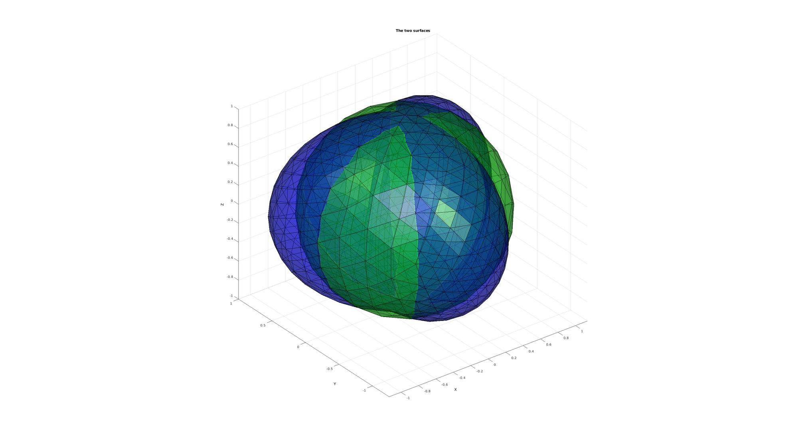
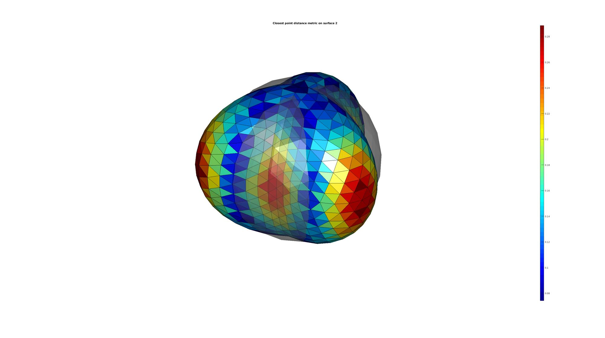
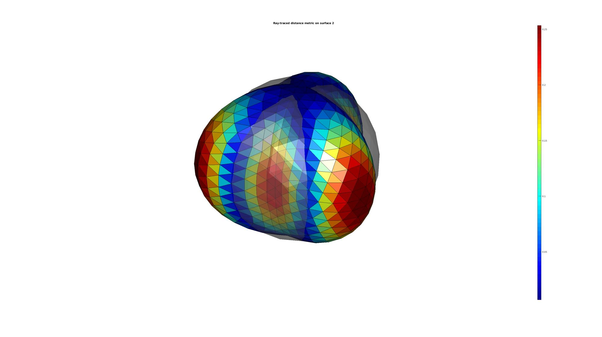
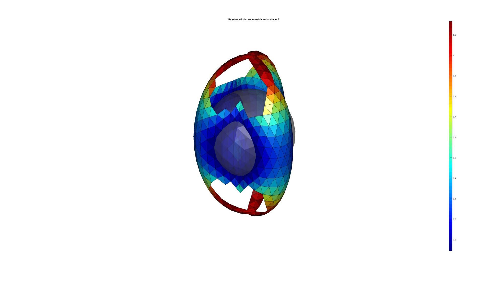
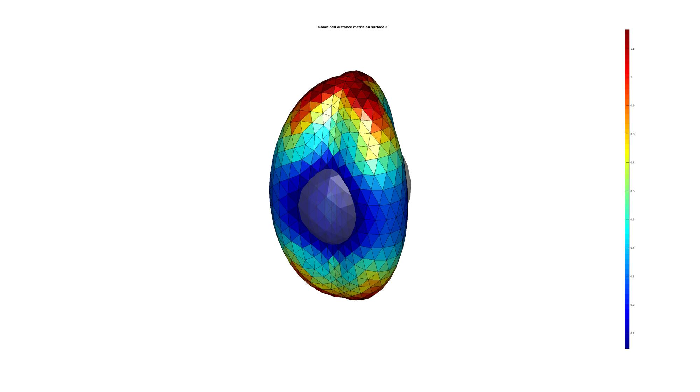
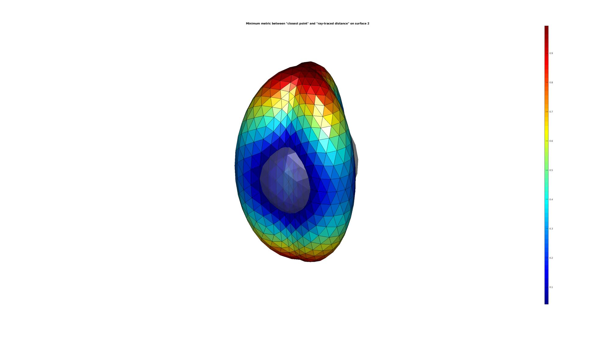

triSurfSetDist
Below is a demonstration of the features of the triSurfSetDist function
Contents
clear; close all; clc;
PLOT SETTINGS
font_size=10; cmap=gray(250); falpha=1; faceAlpha1=0.5;
Building test surfaces
%Defining shape 1 as a sphere [F1,V1,~]=geoSphere(2,1); %Defining shape 2 as a deformed sphere [F2,V2,Vs]=geoSphere(3,1); freqDef=3; ampDef=0.25; ampDefDiff=0.25; n1=Vs(:,3)+(ampDef-ampDefDiff)+ampDef*sin(freqDef*Vs(:,1)); [V2(:,1),V2(:,2),~]=sph2cart(Vs(:,1),Vs(:,2),n1);
Plotting surfaces
hf1=cFigure; title('The two surfaces','FontSize',font_size); xlabel('X','FontSize',font_size);ylabel('Y','FontSize',font_size);zlabel('Z','FontSize',font_size); hold on; patch('faces',F1,'vertices',V1,'FaceColor','g','FaceAlpha',faceAlpha1); patch('faces',F2,'vertices',V2,'FaceColor','b','FaceAlpha',faceAlpha1); axis equal; view(3); axis tight; grid on; set(gca,'FontSize',font_size); camlight headlight; drawnow;
CLOSEST POINT BASED DISTANCE METRIC
[D2]=triSurfSetDist(F2,V2,F1,V1,'dist');
The above is equivalent to:
D2=minDist(V2,V1);
Plotting results
[CF]=vertexToFaceMeasure(F2,D2); hf2=cFigure; title('Closest point distance metric on surface 2','FontSize',font_size); xlabel('X','FontSize',font_size);ylabel('Y','FontSize',font_size);zlabel('Z','FontSize',font_size); hold on; patch('faces',F2,'vertices',V2,'FaceColor','flat','CData',CF); patch('faces',F1,'vertices',V1,'FaceColor',0.5.*ones(1,3),'FaceAlpha',faceAlpha1,'EdgeColor','None'); colormap jet; colorbar; axis equal; view(3); axis tight; axis off; set(gca,'FontSize',font_size); camlight headlight; drawnow;
RAY TRACING DISTANCE METRIC
[D2]=triSurfSetDist(F2,V2,F1,V1,'ray');
Plotting results
[CF]=vertexToFaceMeasure(F2,D2); L=~isnan(CF); %Check for NaN's hf3=cFigure; title('Ray-traced distance metric on surface 2','FontSize',font_size); xlabel('X','FontSize',font_size);ylabel('Y','FontSize',font_size);zlabel('Z','FontSize',font_size); hold on; patch('faces',F2(L,:),'vertices',V2,'FaceColor','flat','CData',CF(L)); patch('faces',F1,'vertices',V1,'FaceColor',0.5.*ones(1,3),'FaceAlpha',faceAlpha1,'EdgeColor','None'); colormap jet; colorbar; axis equal; view(3); axis tight; axis off; set(gca,'FontSize',font_size); camlight headlight; drawnow;
NOTE ON RAY TRACING DISTANCE METRIC AND NORMAL DIRECTIONS THAT DO NOT INTERSECT
The 'dist' method always finds a closest distance result for all points of the surface. However for the ray method the surface normals do not always trace to the other surface. The below example illustrates this. The curvature of the top and bottom regions means the normal direction rays do not intersect with the surface 1.
%Stretching shape in Z-direction V2(:,3)=V2(:,3)*2; %Compute distance metric [D2]=triSurfSetDist(F2,V2,F1,V1,'ray');
Plotting results
[CF]=vertexToFaceMeasure(F2,D2); L=~isnan(CF); %Check for NaN's hf3=cFigure; title('Ray-traced distance metric on surface 2','FontSize',font_size); xlabel('X','FontSize',font_size);ylabel('Y','FontSize',font_size);zlabel('Z','FontSize',font_size); hold on; patch('faces',F2(L,:),'vertices',V2,'FaceColor','flat','CData',CF(L)); patch('faces',F1,'vertices',V1,'FaceColor',0.5.*ones(1,3),'FaceAlpha',faceAlpha1,'EdgeColor','None'); colormap jet; colorbar; axis equal; view(3); axis tight; axis off; set(gca,'FontSize',font_size); camlight headlight; drawnow;
EXAMPLE TO FIX NAN's
%Logic for NaN's L=isnan(D2); %Use dist method where NaN occured [D2_nan]=triSurfSetDist(F2,V2(L,:),F1,V1,'dist'); D2(L)=D2_nan;
Plotting results
[CF]=vertexToFaceMeasure(F2,D2); hf3=cFigure; title('Combined distance metric on surface 2','FontSize',font_size); xlabel('X','FontSize',font_size);ylabel('Y','FontSize',font_size);zlabel('Z','FontSize',font_size); hold on; patch('faces',F2,'vertices',V2,'FaceColor','flat','CData',CF); patch('faces',F1,'vertices',V1,'FaceColor',0.5.*ones(1,3),'FaceAlpha',faceAlpha1,'EdgeColor','None'); colormap jet; colorbar; axis equal; view(3); axis tight; axis off; set(gca,'FontSize',font_size); camlight headlight; drawnow;
EXAMPLE OF "HYBRID APPROACH"
A hybrid approach is also possible whereby the output is the smallest distance for the two methods (nanmin is used so NaN values due to ray tracing enforces the distance method on these locations instead).
%Compute distance metric [D2]=triSurfSetDist(F2,V2,F1,V1,'dist-ray');
Plotting results
[CF]=vertexToFaceMeasure(F2,D2); hf3=cFigure; title('Minimum metric between "closest point" and "ray-traced distance" on surface 2','FontSize',font_size); xlabel('X','FontSize',font_size);ylabel('Y','FontSize',font_size);zlabel('Z','FontSize',font_size); hold on; patch('faces',F2,'vertices',V2,'FaceColor','flat','CData',CF); patch('faces',F1,'vertices',V1,'FaceColor',0.5.*ones(1,3),'FaceAlpha',faceAlpha1,'EdgeColor','None'); colormap jet; colorbar; axis equal; view(3); axis tight; axis off; set(gca,'FontSize',font_size); camlight headlight; drawnow;

GIBBON www.gibboncode.org
Kevin Mattheus Moerman, gibbon.toolbox@gmail.com
GIBBON footer text
License: https://github.com/gibbonCode/GIBBON/blob/master/LICENSE
GIBBON: The Geometry and Image-based Bioengineering add-On. A toolbox for image segmentation, image-based modeling, meshing, and finite element analysis.
Copyright (C) 2019 Kevin Mattheus Moerman
This program is free software: you can redistribute it and/or modify it under the terms of the GNU General Public License as published by the Free Software Foundation, either version 3 of the License, or (at your option) any later version.
This program is distributed in the hope that it will be useful, but WITHOUT ANY WARRANTY; without even the implied warranty of MERCHANTABILITY or FITNESS FOR A PARTICULAR PURPOSE. See the GNU General Public License for more details.
You should have received a copy of the GNU General Public License along with this program. If not, see http://www.gnu.org/licenses/.